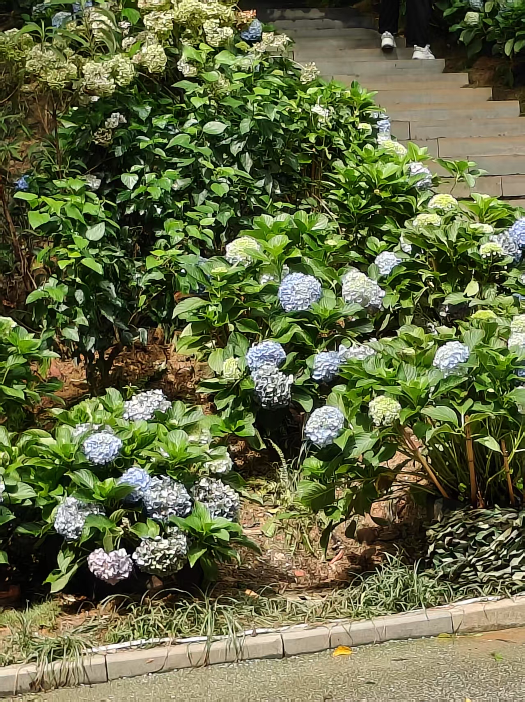
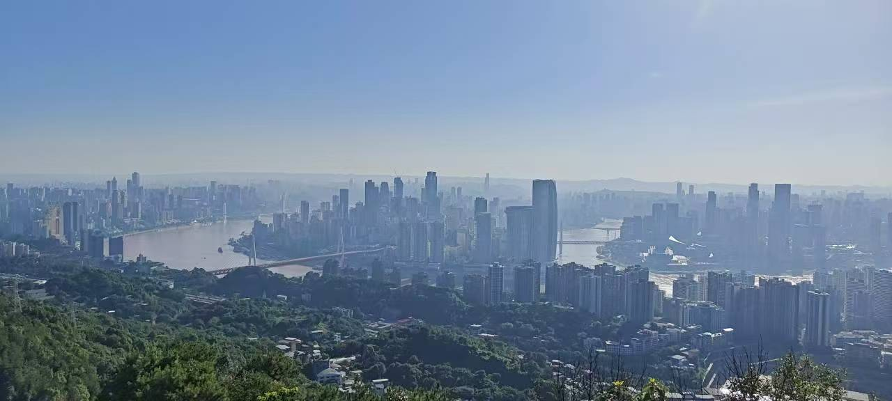
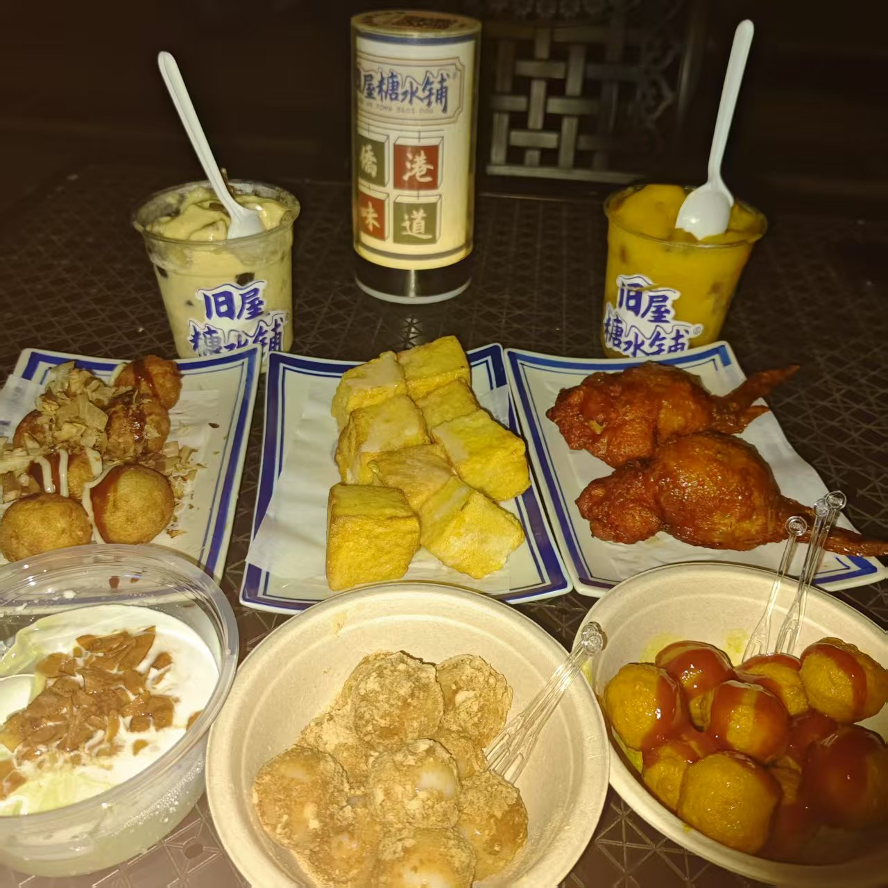
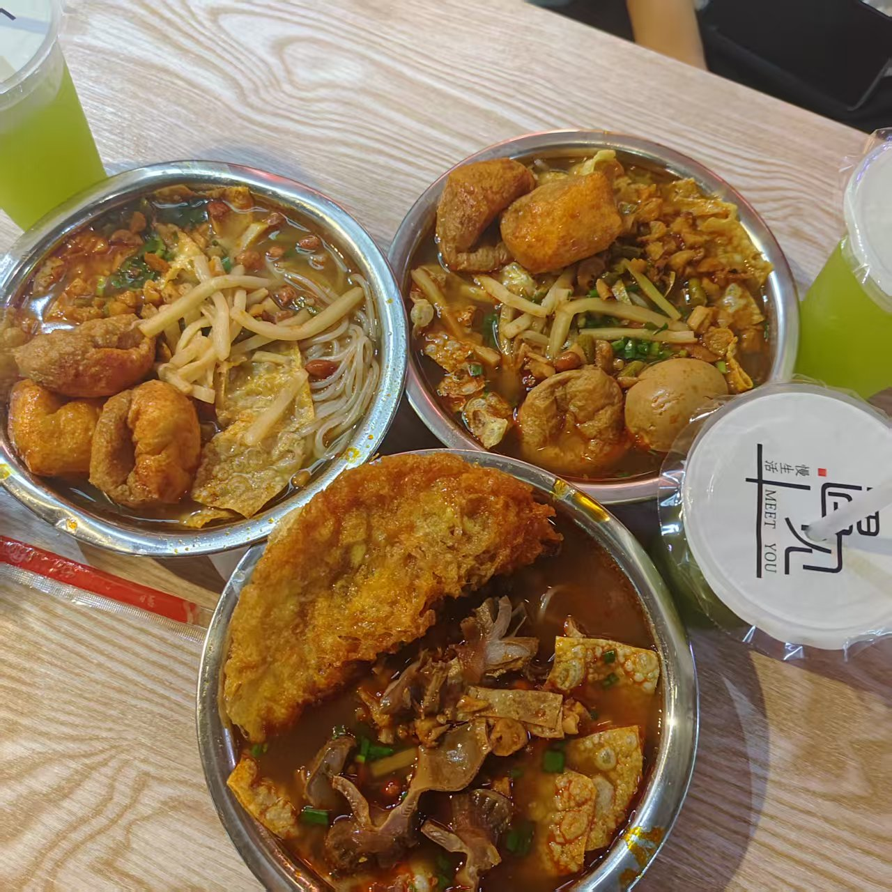
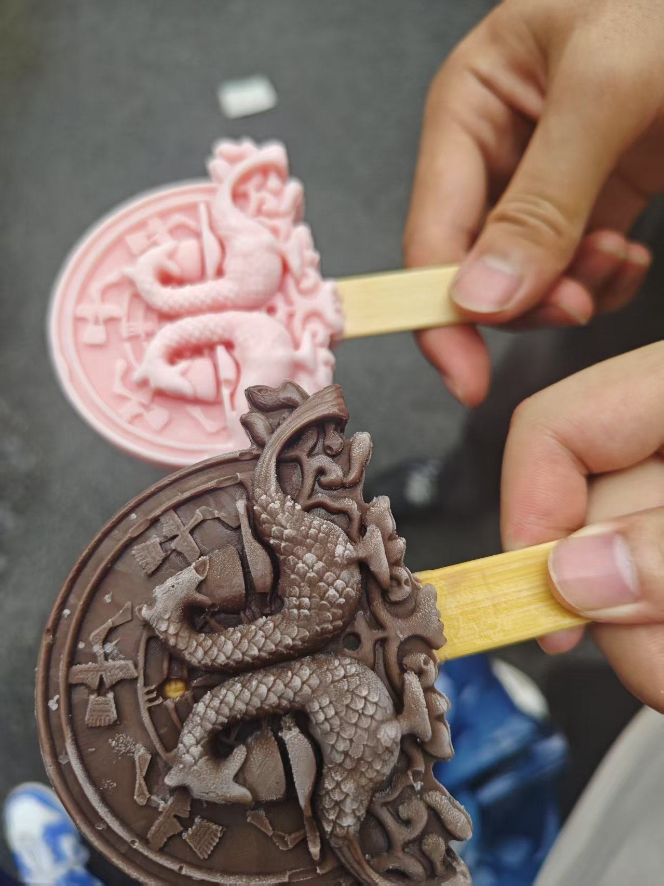

摄影爱好


本人不爱出镜，但较喜爱拍摄风景。穿梭于山川湖海间，总被那抹自然的瑰丽所吸引。无论是清晨山间缥缈的云雾，还是黄昏时天边绚烂的晚霞，看到美好的事物也会忍不住记录下来。 镜头成为我的第三只眼，定格时光，将转瞬即逝的美好，化为永恒的视觉诗篇。
爱好美食



我爱好美食，热衷于探寻藏在街巷里的烟火滋味。从街头巷尾的特色小吃，到精致典雅的创意料理，都让我充满好奇。每一道没吃过的菜品，都像是等待解锁的惊喜盲盒。 我享受舌尖上绽放的奇妙滋味，也乐于在品尝后与朋友分享，用味蕾丈量世界，发现生活的百般精彩。